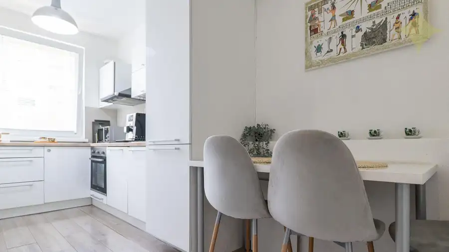
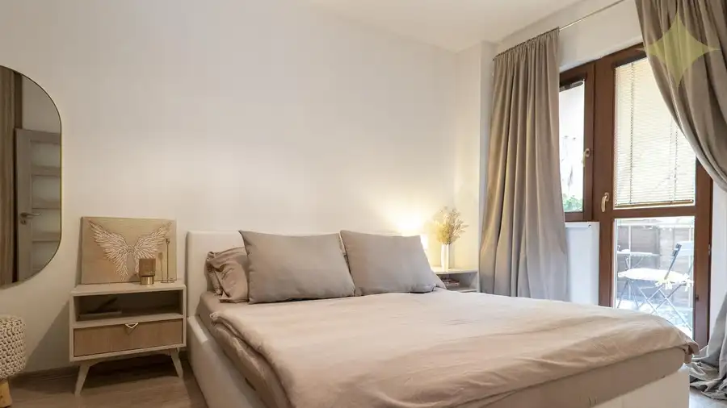
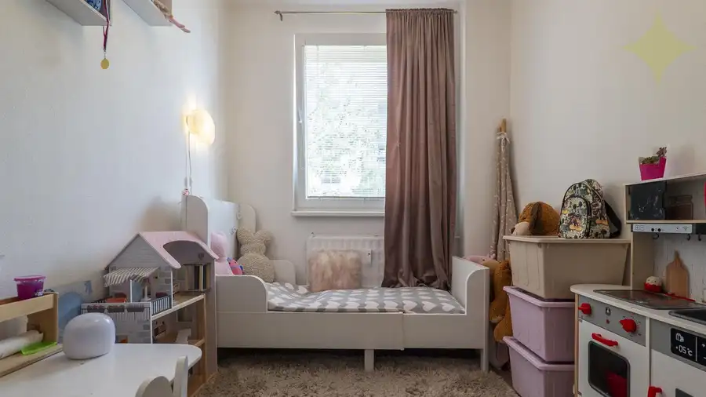
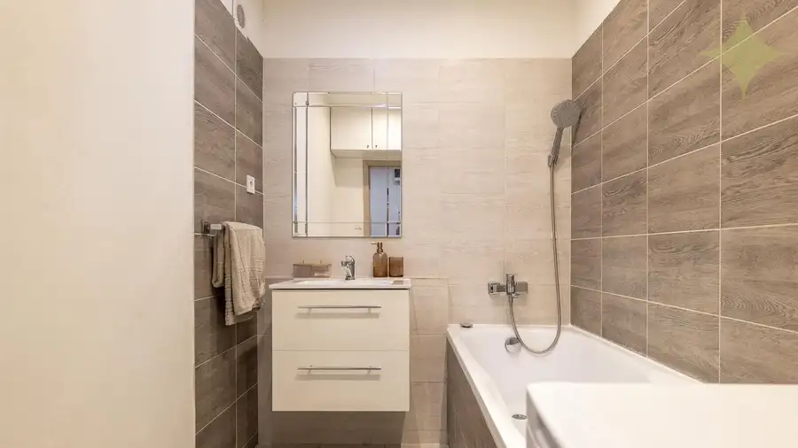
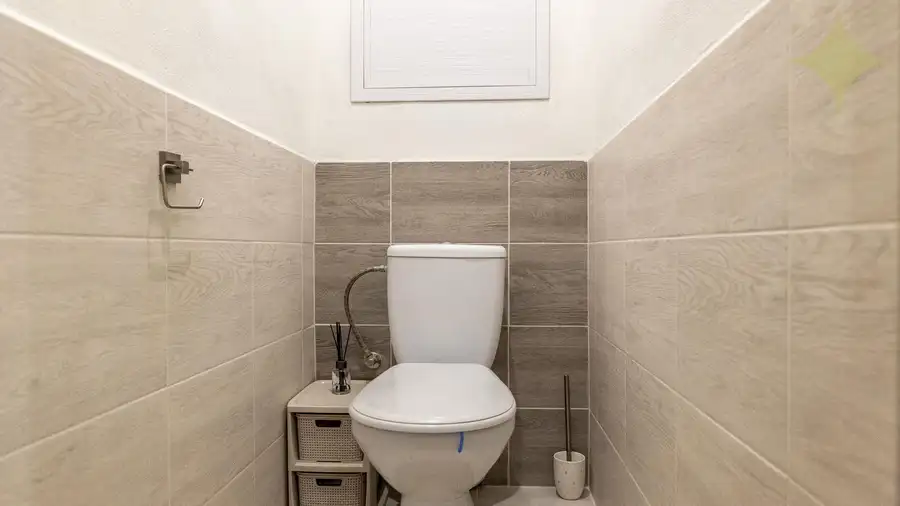
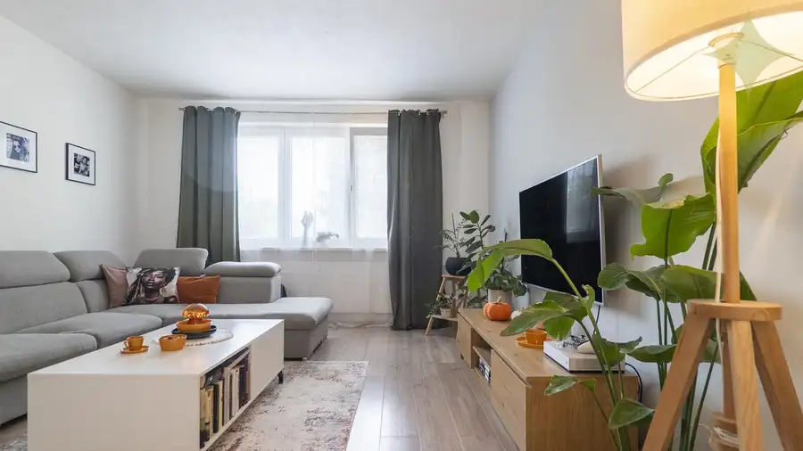
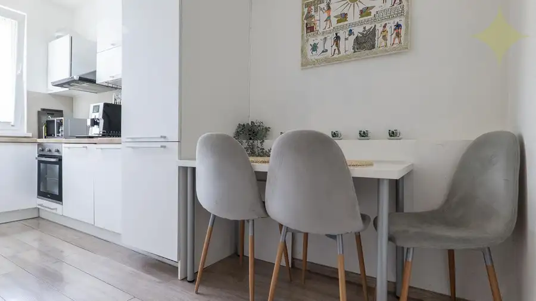

3-izbový prerobený byt s loggiou | na Hôrke, Nitra – diely
Nitra








- Dispozícia3-izbový
- Plocha61.4 m²
- Poschodie2. z 8
- StavKompletná rekonštrukcia
- VlastníctvoOsobné
O nehnuteľnosti
Hľadáte byt pre rodinu, pri ktorom nemusíte začínať búraním jadra, výmenou elektriny a kompletnou rekonštrukciou?Na ulici Na Hôrke v Nitre ponúkame 3-izbový byt s praktickou dispozíciou, loggiou a pivnicou. Nachádza sa na 1. poschodí bytového domu a jeho výhodou sú predovšetkým tri samostatné obytné izby – obývačka zostáva obývačkou, dieťa môže mať vlastnú izbu a rodičia samostatnú spálňu s výstupom na loggiu.Byt bol v roku 2016 kompletne zrekonštruovaný. Pôvodné bytové jadro bolo nahradené murovaným, menili sa rozvody vody, kanalizácie aj elektriny, podlahy, interiérové dvere, stierky a maľby. Rekonštrukciou prešla kúpeľňa aj samostatné WC a osadené boli bezpečnostné vstupné dvere. Okná sú plastové so žalúziami.Pripravili sme si pre Vás aj videoprezentáciu, ktorú si môžete pozrieť na tomto linku: https://youtu.be/XFjnFNDh72w.DISPOZÍCIA A VÝMERYSamotný byt má podlahovú plochu 61,4 m². K bytu patrí pivnica s výmerou 2,25 m² a loggia s výmerou 3,50 m². Dispozične pozostáva z obývacej izby, spálne s výstupom na loggiu, detskej izby, samostatnej kuchyne, predsiene, kúpeľne a samostatnej toalety.Kuchyňa je vybavená kuchynskou linkou so vstavanou elektrickou rúrou, elektrickou varnou doskou, umývačkou riadu, chladničkou s mrazničkou a odsávačom pár. V byte sa nachádza aj vstavaná skriňa. Rozsah zariadenia, ktoré v byte zostane, je predmetom dohody s majiteľmi.BYTOVÝ DOMBytový dom bol daný do užívania v roku 1989 a postupne prešiel významnými obnovami. V roku 2011 boli v spoločných priestoroch osadené plastové okná, dom bol zateplený, dostal novú fasádu, strešnú krytinu a klampiarske konštrukcie. V roku 2013 boli vymenené vstupné dvere a v roku 2022 prebehla výmena stúpacích rozvodov inžinierskych sietí.Dom má výťah a elektrického vrátnika. Pivnica patriaca k bytu sa nachádza v suteréne.LOKALITA, KTORÁ FUNGUJE AJ PRE RODINUPri rodinnom bývaní však nerozhoduje iba to, čo je za vstupnými dverami.Na Hôrke ponúka zázemie etablovaného sídliska – školu, škôlku, potraviny a ďalšiu občiansku vybavenosť máte v blízkom okolí. Neďaleko sa nachádza konečná zastávka MHD so spojmi do rôznych častí Nitry. Parkovanie je možné z oboch strán bytového domu.Rekonštrukcia má už svoj vek, ale hodnota bytu je inde: rozumná dispozícia troch samostatných izieb, loggia, samostatná kuchyňa, kúpeľňa oddelená od WC, pivnica, zrekonštruované technické rozvody bytu a obnovený bytový dom.Ak hľadáte praktický 3-izbový byt na Klokočine, ktorý môžete využívať bez potreby okamžitej kompletnej rekonštrukcie, rád vám ho osobne ukážem.Na Hôrke, Nitra – Klokočina. Vidíme sa na obhliadke.CELKOVÁ CENA 165 000 €Osobnú obhliadku si viete dohodnúť na tel. čísle 0903 425 347, Ing. Martin Sklenármail: martin.sklenar@premiumliving.skEnergetický certifikát nebol predložený.Samozrejmosťou je aj vybavenie najvýhodnejšieho hypotekárneho úveru šitého na mieru práve pre Vás v akejkoľvek banke. Taktiež súdny znalec v obore stavebníctva a oceňovania nehnuteľností, ktorý Vám vyhotoví znalecký posudok.
Parametre
- Cellar area
- 2.25 m²
- Cena vrátane energií
- Nie
- Druh
- 3 izbový byt
- Dátum zverejnenia
- 07. 09. 2026
- Energetický certifikát budovy
- nie je
- Plocha lodžie
- 3.5 m²
- Podlažie
- 2
- Počet nadzemných podlaží
- 8
- Rok výstavby
- 1989
- Stav nehnuteľnosti
- Kompletná rekonštrukcia
- Telekomunikácie
- Optická sieť
- Typ
- Predaj
- Typ konštrukcie
- Panelová
- Umiestnenie
- Vstavba podkrovia
- Vlastníctvo
- Osobné
- Vybavenie
- Výťah
- Vykurovanie
- Ústredné
- Úžitková plocha
- 61.4 m²
Kde to je


Mohlo by Vás zaujímať
 Komerčné priestoryNové
735 000 €Historický Vežičkový dom v centre Nitry – príležitosť vrátiť život jednej z výrazných budov mesta
Nitra
803 m²
Komerčné priestoryNové
735 000 €Historický Vežičkový dom v centre Nitry – príležitosť vrátiť život jednej z výrazných budov mesta
Nitra
803 m²
 DomNové
147 000 €Rodinný dom s veľkým potenciálom | Vráble – Horný Ohaj | pozemok 1 251 m²
Vráble
205 m²
DomNové
147 000 €Rodinný dom s veľkým potenciálom | Vráble – Horný Ohaj | pozemok 1 251 m²
Vráble
205 m²
 DomNové
299 900 €Dvojgeneračný dom po rekonštrukcii interiéru s pekným pozemkom Golianova ul., Nitra - Čermáň
Nitra
204 m²
DomNové
299 900 €Dvojgeneračný dom po rekonštrukcii interiéru s pekným pozemkom Golianova ul., Nitra - Čermáň
Nitra
204 m²